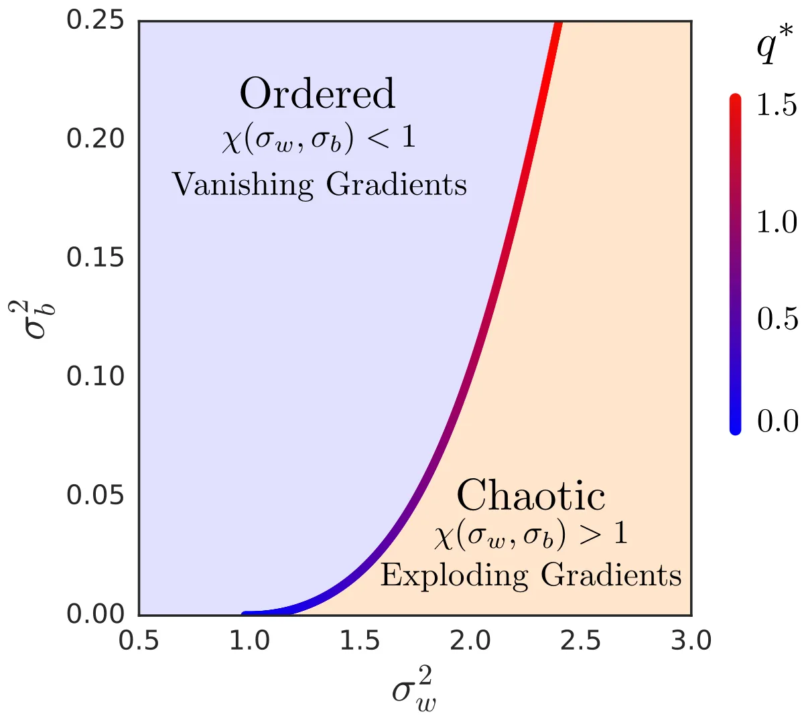
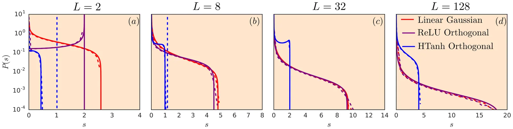
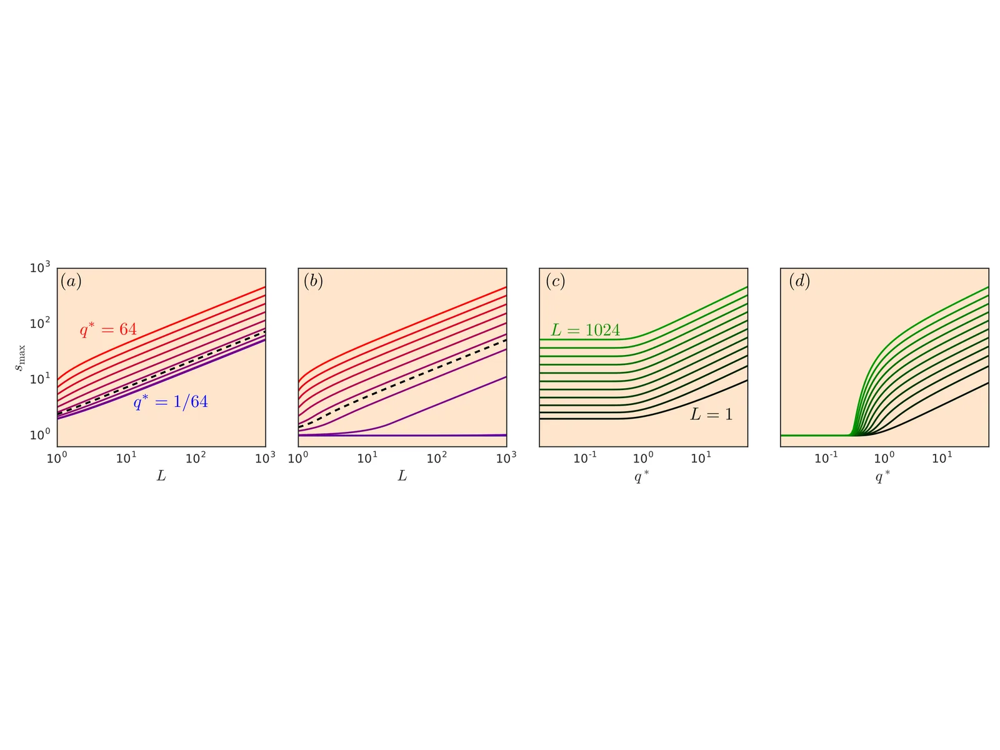
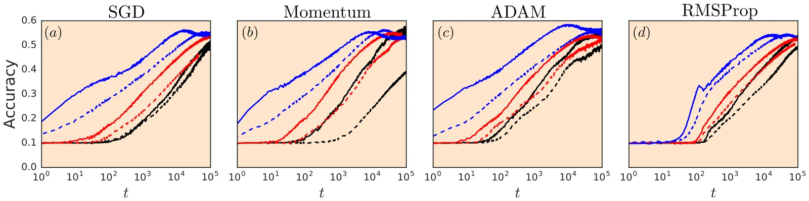
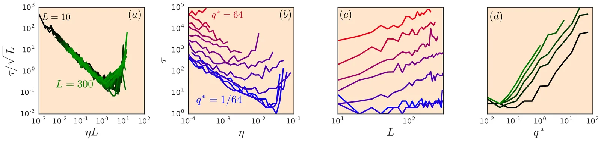
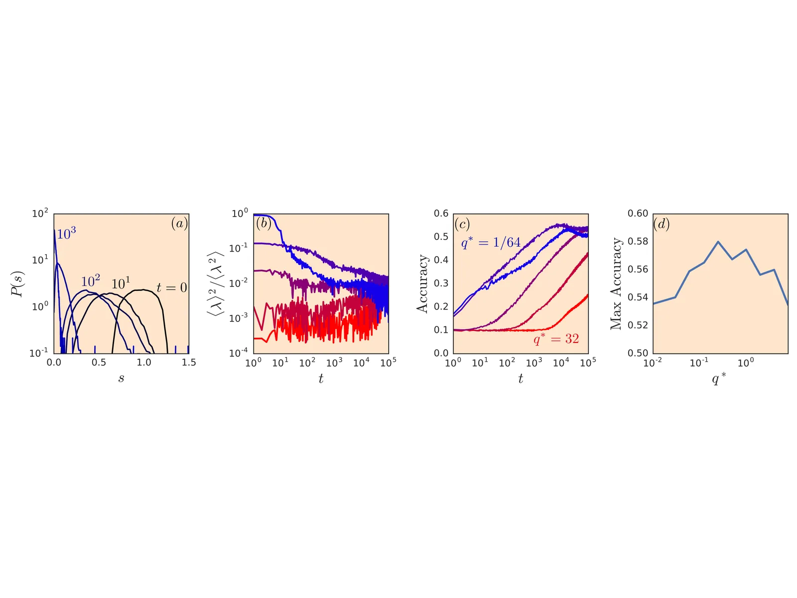

Resurrecting the Sigmoid in Deep Learning Through Dynamical Isometry: Theory and Practice
论文: Pennington, Schoenholz, Ganguli (2017) arXiv: 1711.04735 分类: A. 初始化 / 参数化 · E. 隐状态 / Jacobian / 信号传播
问题动机
深度网络训练中，梯度消失 / 爆炸是核心瓶颈。传统分析仅关注 Jacobian 的均方奇异值（mean squared singular value）是否为 O(1)，但这只是一个平均量——即使均值合适，奇异值分布可能非常宽，仍然存在大量接近 0 的方向导致梯度在这些方向上消失。
更具体地说，sigmoid 激活函数在深度网络中已被 ReLU 系列取代，主要原因就是 sigmoid 的梯度消失问题。但作者认为，如果能找到合适的初始化方案，sigmoid 可以被"复活"。
已有方法的不足：
- Xavier / He 初始化仅保证信号方差逐层不变（前向传播的二阶矩），对应的是 Jacobian 均方奇异值为 O(1)，但不控制完整奇异值分布。
- "混沌边缘"（edge of chaos）初始化保持网络处于有序-混沌相变点，信号可以传播，但仍不保证 Jacobian 的所有奇异值都接近 1。
核心想法
Dynamical isometry（动态等距）：要求输入-输出 Jacobian J 的整个奇异值分布集中在 1 附近，而非仅均方奇异值为 O(1)。这是比 edge-of-chaos 更强的条件，能确保反向传播的梯度在所有方向上既不消失也不爆炸。
关键洞察：通过精心选择权重分布（而非仅设置方差），可以使深度网络（包括 sigmoid 网络）在初始化时实现动态等距。
方法细节
理论框架
考虑 L 层全连接网络，输入-输出 Jacobian 为：
其中 W_\ell 是权重矩阵，D_\ell = \text{diag}(\phi'(h_\ell)) 是激活函数导数的对角矩阵。
核心量：Jacobian 的奇异值分布由 J^\top J 的特征值分布决定。作者利用自由概率论（free probability theory）和随机矩阵理论分析 J^\top J 的谱。
Edge of Chaos vs. Dynamical Isometry
网络的信号传播行为由两个序参量（order parameters）决定：
- q^\ell：第 \ell 层预激活值的方差
- c^\ell：两个不同输入在第 \ell 层的归一化相关性
这两个量的递推关系定义了一个相图（phase diagram）：
- 有序相（ordered phase）：所有输入收敛到同一表示，c^\ell \to 1
- 混沌相（chaotic phase）：相似输入被映射到无关表示
- 混沌边缘（edge of chaos）：相变点，信号刚好可以传播

动态等距是比混沌边缘更强的要求：
- Edge of chaos ⟹ Jacobian 均方奇异值 \approx 1
- Dynamical isometry ⟹ Jacobian 所有奇异值 \approx 1
实现动态等距
关键发现：使用正交初始化（orthogonal initialization）而非高斯初始化，配合正确的方差缩放，可以使 Jacobian 奇异值分布急剧收窄到 1 附近。
对于 sigmoid 激活函数 \phi(x) = \tanh(x)：
- 将网络置于混沌边缘（选择合适的 \sigma_w^2, \sigma_b^2）
- 使用正交矩阵初始化 W_\ell（而非 i.i.d. 高斯）
- 正交性使 W_\ell^\top W_\ell = \sigma_w^2 I，消除了权重矩阵本身的奇异值散布
下图展示了不同激活函数和初始化方式下的 Jacobian 奇异值分布。正交 hard-tanh 的分布远比高斯初始化或正交 ReLU 更集中：

下图量化了最大奇异值 s_{\max} 随深度 L 和 q^* 的增长行为，揭示了正交初始化 + 有界激活函数（hard-tanh）是实现动态等距的关键组合：

实验验证
训练深度 tanh 网络（200 层），比较不同初始化和激活函数的组合：

训练时间的系统性测量揭示了一个优雅的缩放规律——当学习率按 L 缩放、训练时间按 \sqrt{L} 缩放后，不同深度的曲线坍缩到同一条通用曲线上：

训练过程中 Jacobian 奇异值分布的演化显示，动态等距不仅在初始化时重要，最优的初始 q^* 也能更好地在训练过程中维持等距性：

关键结果
- Sigmoid 可以在深度网络中有效训练，前提是使用正交初始化实现动态等距。
- 正交初始化 >> 高斯初始化：相同的 edge-of-chaos 超参数下，正交初始化使 200 层 tanh 网络的训练速度提升数个数量级。
- 奇异值分布的宽度是关键：仅仅让均方奇异值为 1 是不够的，需要整个分布集中。
- 理论预测与实验吻合：自由概率论给出的 Jacobian 谱预测与数值模拟高度一致。
局限与延伸阅读
局限：
- 分析主要适用于全连接网络的初始化时刻，不保证训练过程中持续保持动态等距。
- 对于现代 LLM 中的组件——attention、LayerNorm/RMSNorm、softmax、gating 机制、残差缩放、数据依赖的激活——精确的动态等距保证变得极为困难。
- 正交初始化的计算开销在超大规模模型中可能成为瓶颈。
与本主题其他论文的关系：
1312.6120-deep-linear-networks/：为动态等距提供了深度线性网络中的精确解析基础。1901.09321-fixup/、2003.04887-rezero/：通过残差缩放在初始化时近似实现"类动态等距"效果。2403.09635-transformers-get-stable/（DeepScaleLM）：将信号传播理论推广到完整的 Transformer 组件。- 动态等距是本主题的理论理想，后续方法大多可以理解为在不同程度上近似这一目标。